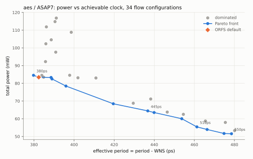
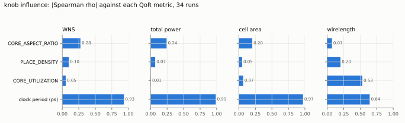

OpenROAD QoR Explorer
在 OpenROAD-flow-scripts（ORFS）的完整 RTL-to-GDS 流程上做參數掃描與 QoR 分析：一個設計（aes · ASAP7 預測性製程）、四個 flow 旋鈕、34 組 run，回答「哪個旋鈕真正影響 timing、power 和 routability」。Parameter sweep and QoR analysis over a full RTL-to-GDS flow on OpenROAD-flow-scripts (ORFS): one design (aes on the ASAP7 predictive PDK), four flow knobs, 34 runs — answering which knob actually moves timing, power, and routability.
01這個專案在做什麼What this project does
晶片實體設計流程有一堆可調參數（利用率、擺放密度、時脈約束⋯），但哪些真的重要？這個專案用 Tcl + Python 把 ORFS 的 synthesis → floorplan → place → CTS → route 全流程自動化——不 fork 流程腳本，每組 run 都是普通的 make 加命令列變數覆寫——掃 34 組參數組合，收集每組的 WNS/TNS、power、cell area、wirelength、DRC 數，算出旋鈕的敏感度排名和 power-vs-timing 的 Pareto front。Physical design flows have many tunable parameters (utilization, placement density, clock constraints…) — which ones actually matter? This project automates the full ORFS synthesis → floorplan → place → CTS → route flow with Tcl + Python — no forked flow scripts, every run is plain make with command-line overrides — sweeping 34 parameter combinations, collecting WNS/TNS, power, cell area, wirelength, and DRC count per run, then computing knob sensitivity rankings and a power-vs-timing Pareto front.
02結果圖Result charts


03分析報告——五個發現The analysis — five findings
以下每個數字都來自 repo 提交的 data/runs.csv 與 findings_evidence.txt；「有效週期」= clock period − WNSEvery number below comes from the committed data/runs.csv and findings_evidence.txt; “effective period” = clock period − WNS
| 旋鈕 |ρ|Knob |ρ| | WNS | Power | Cell area | Wirelength |
|---|---|---|---|---|
| Clock period | 0.93 | 0.99 | 0.97 | 0.64 |
| CORE_ASPECT_RATIO | 0.28 | 0.24 | 0.20 | 0.07 |
| PLACE_DENSITY | 0.10 | 0.07 | 0.05 | 0.20 |
| CORE_UTILIZATION | 0.05 | 0.01 | 0.07 | 0.53 |
1時脈週期主導一切The clock period dominates everything
2PLACE_DENSITY ≤ 0.70 是 no-op，包括官方預設PLACE_DENSITY ≤ 0.70 is a no-op — including the stock default
[WARNING GPL-0302] Target density 0.6500 is too low… Automatically adjusting to uniform density 0.7000。官方 aes config 預設 0.65，所以每一次 stock run 都被靜默改寫成 0.70。超過 clamp 後旋鈕才真實且昂貴：0.80 被採用、timing-driven pass 再拉到 0.928，WNS 從 −2.36 惡化到 −30.90 ps。At CORE_UTILIZATION=70, requesting 0.50 and 0.65 produced identical QoR on every metadata key. The placer log explains why: [WARNING GPL-0302] Target density 0.6500 is too low… Automatically adjusting to uniform density 0.7000. The stock aes config ships 0.65, so every stock run is silently rewritten to 0.70. Above the clamp the knob is real and expensive: 0.80 is honored, the timing-driven pass raises it to 0.928, and WNS degrades from −2.36 to −30.90 ps.3降利用率用更多 cell 買 timing，不是更省電Lower utilization buys timing with more cells, not less power
4Pareto front，與預設值的價格The Pareto front, and the price of the default
5掃描穩健性Sweep robustness
04工程細節Engineering details
a可拋棄式 Docker 執行Disposable Docker runs
openroad/orfs image 裡：WORK_HOME 把 log 和結果導到 host mount，容器用完即丟（--rm）；FLOW_VARIANT 給每組 run 獨立的輸出目錄，可平行跑；逾時由 host 端 docker kill 強制執行。掃描值就是 make 命令列變數，靠 make 的優先權覆寫預設，不改 image 裡任何檔案。The flow runs in a version-pinned openroad/orfs image: WORK_HOME redirects logs/results to a host mount so containers stay disposable (--rm); FLOW_VARIANT namespaces each run's outputs for parallel runs; timeouts are enforced from the host via docker kill. Sweep values are plain make command-line variables overriding defaults by normal precedence — nothing inside the image is modified.b數據都有憑據Evidence behind every number
data/ 提交了每組 run 的 JSON 快照與 runs.csv——每個引用的數字都能對回原始資料。校準 run 驗證了 SDC 產生器：stock SDC 與生成 SDC 在 107 個 metadata 欄位中 103 個完全一致（差的 4 個是 cpu/memory/runtime），證明流程對固定 image 是 deterministic 的。The repo's data/ commits a JSON snapshot per run plus runs.csv — every quoted number traces back to raw data. Calibration runs validate the SDC generator: stock vs generated SDC match on 103 of 107 metadata keys (the 4 differences are cpu/memory/runtime fields), showing the flow is deterministic for a fixed image.